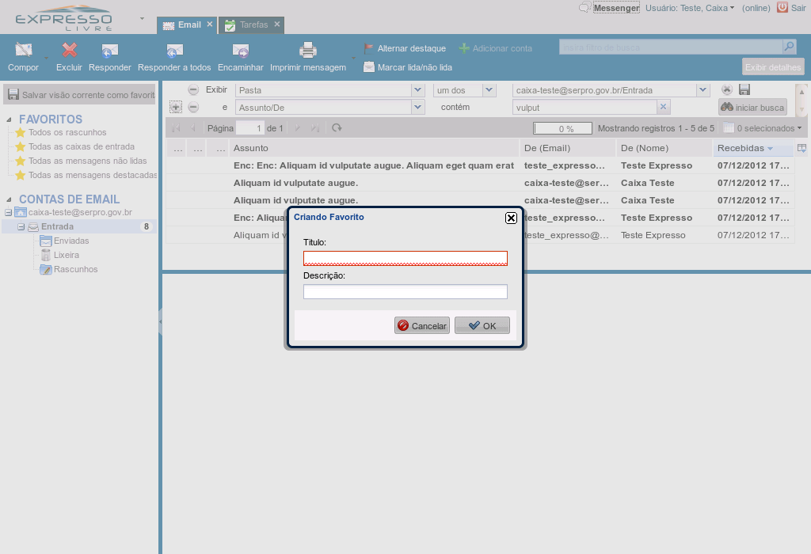

(Etapa xx de 12)
Uma das formas de buscar e-mails é utilizar diretamente o campo de busca.
Referência (copie para o Mantis o texto em vermelho):
demo_.html?interacao=71
(Etapa xx de 12)
A lupa ou a tecla Enter realiza a busca e lista os e-mails encontrados.
E o botão X do campo de busca é utilizado para limpar a busca atual, mostrando todos os e-mails da pasta. Clique no botão "lupa"
Referência (copie para o Mantis o texto em vermelho):
demo_.html?interacao=72
(Etapa xx de 12)
Se a busca for mais complicada, clicar no botão "Exibir detalhes" para os detalhes da busca. Clique no botão "Exibir detalhes"
Referência (copie para o Mantis o texto em vermelho):
demo_.html?interacao=74
(Etapa xx de 12)
Os botões "+" e "-" são usados para adicionar e remover critérios de busca.
Referência (copie para o Mantis o texto em vermelho):
demo_.html?interacao=75
(Etapa xx de 12)
Os campos dos critérios de busca devem ser preenchidos para refinar a busca.
Referência (copie para o Mantis o texto em vermelho):
demo_.html?interacao=76
(Etapa xx de 12)
Clique no botão "Iniciar busca" quando os critérios estiverem preenchidos. Mais critérios podem ser adicionados ou removidos depois. Clique no botão "Iniciar busca"
Referência (copie para o Mantis o texto em vermelho):
demo_.html?interacao=77
(Etapa xx de 12)
O botão X é utilizado para limpar a busca atual, mostrando todos os e-mails da lista. Clique no botão "X"
Referência (copie para o Mantis o texto em vermelho):
demo_.html?interacao=78
(Etapa xx de 12)
Se você quiser salvar os seus critérios de busca, use o botão de salvar. Clique no botão salvar
Referência (copie para o Mantis o texto em vermelho):
demo_.html?interacao=79
(Etapa xx de 12)
Ou, utilize o botão "Salvar visão corrente como Favoritos". Clique no botão Salvar visão corrente como Favoritos
Referência (copie para o Mantis o texto em vermelho):
demo_.html?interacao=80

(Etapa xx de 12)
Esta última opção abre uma janela para dar um nome a essa busca, que é salva nos Favoritos.
Referência (copie para o Mantis o texto em vermelho):
demo_.html?interacao=81
(Etapa xx de 12)
Com o nome salvo nos Favoritos, essa busca personalizada pode ser recuperada rapidamente.
Referência (copie para o Mantis o texto em vermelho):
demo_.html?interacao=82
(Etapa xx de 12)
Se posteriormente for necessário editar, apagar ou sobrescrever uma busca nos Favoritos, clique com o botão direito sobre ela e selecione a opção correspondente.
Referência (copie para o Mantis o texto em vermelho):
demo_.html?interacao=83